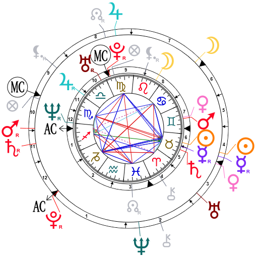

Signo do Zodiaco: Peixes
Que legal, parece que seu signo do Zodiaco é: PeixesA empatia e a humildade podem ser fortes características de Peixes. Sempre conectados com sua intuição, piscianos e piscianas costumam captar as coisas no ar, muitas vezes são pessoas bem discretas e observadoras que conseguem perceber o mundo através da observação de si. Quem tem um acúmulo de planetas no signo de Peixes tende a dar muita importância aos seus sonhos e ao que ainda não é real, mas pode ser.
